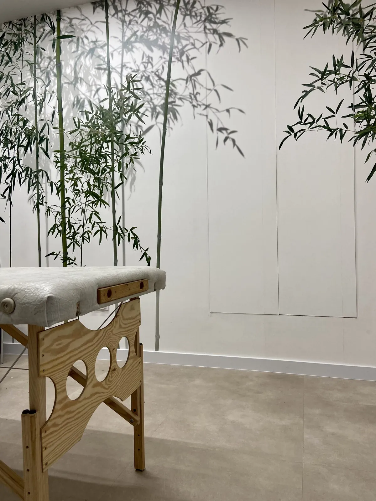

U pacjenta
Rehabilitacja z dojazdem
Przyjeżdżam na terenie Gdańska i okolic. W szczególnych przypadkach, a także do większej liczby osób, dojadę dalej.
- przywożę profesjonalny przenośny stół i potrzebny sprzęt — także falę uderzeniową,
- przy terapii na stole potrzebne jest miejsce ok. 2,5 × 1,5 m i dwa ręczniki.